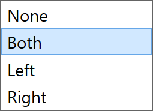

Panneau Stations RG
Les stations de reprise sont appelées RG-Stations dans TecZone. Le panneau Station RG est utilisé pour configurer les stations de reprise d’une machine de cellule de pliage.
Pour accéder au panneau Stations RG :
-
Cliquez sur le lien Stations RG depuis le panneau Ramassage, le panneau Pliage, le panneau Reprise ou le panneau Dépôt.
-
Alternativement, cliquez directement sur une station de reprise.
Selon l’opération de pliage et les positions des stations, le panneau Stations RG affiche un indicateur alphabétique (P, R1, #1, D, etc.) dans le panneau.


La case à cocher Flip Part dans le panneau Ramassage est utilisée pour placer la pièce à l’envers par rapport à la position actuelle. Parfois, cela est utile pour éviter les collisions entre les brides orientées vers le bas et les bras de station de reprise. TecZone recalculera immédiatement un nouveau chemin de robot lorsque vous retournez la pièce.
| Lorsqu’une station de reprise n’est pas utilisée, le panneau semble simple car la position de la pièce ne peut pas être contrôlée (elle dépend de la position de serrage de la pièce entre le poinçon et la matrice). |
-
Les Stations sont utilisées pour sélectionner l’une des stations ou pour désactiver ou activer les deux stations.

-
Utilisez les paramètres Positions pour ajuster les positions des stations sur le rail du lit de la machine. Dans l’image montrée ci-dessous, à gauche les stations ne sont pas placées sous la pièce au début.

Après avoir modifié les valeurs dans l’option Positions, les deux stations sont positionnées de sorte que les ventouses de la Station RG soient placées sous la pièce.

Les paramètres de la section Aspiration sont utilisés pour configurer les bras d’aspiration.
-
Utilisez le sélecteur Type pour changer le type de ventouse.
-
Utilisez le sélecteur Arm pour sélectionner un ou tous les bras d’aspiration. Lorsque sélectionné, chaque bras est identifié par son étiquette (A, B, C, etc.).
-
Utilisez le paramètre Angle pour faire pivoter le bras (par incréments de 5°).
-
Utilisez le paramètre Grille pour étendre/rétracter le bras (par incréments de 10 mm).

|
Vous pouvez également modifier interactivement l’angle et la grille en faisant glisser les curseurs individuellement. Passez la souris sur un bras d’aspiration pour voir les curseurs d’angle et de grille. Lorsque Tous les bras sont sélectionnés, il n’est pas possible de modifier l’angle et la grille de manière interactive. |
-
Sélectionnez l'état de fonctionnement du bras d’aspiration à désactivé, activé, ou retiré.

-
Après avoir terminé le réglage de l’aspiration, vous pouvez utiliser l’option Copy Right pour utiliser la même configuration pour l’autre côté de la Station RG.
-
Les liens Prev et Suiv sont affichés s’il y a plusieurs opérations de reprise dans cette pièce, et sont utilisés pour naviguer entre elles.
-
Le lien Reprise R1 est utilisé pour éditer la position de repos de la pièce sur les stations de reprise.
Au fur et à mesure que vous reconfigurez la station de reprise, TecZone vérifie les collisions avec la pièce, le robot, le préhenseur en temps réel et met à jour les indicateurs d’état immédiatement.